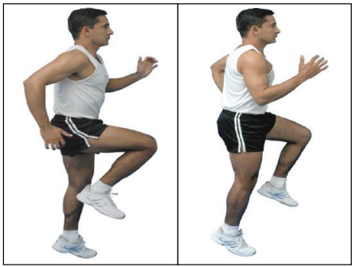
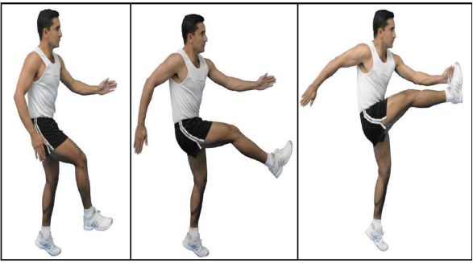
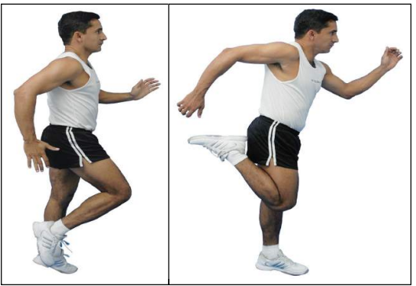
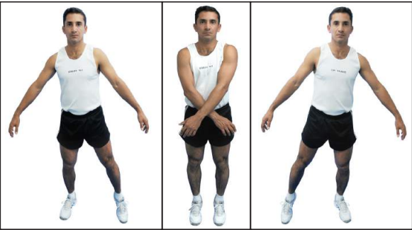
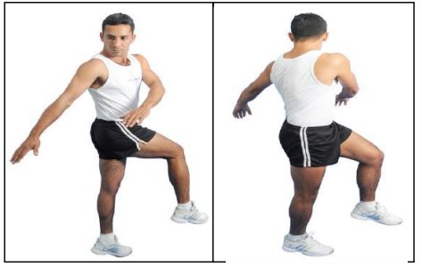
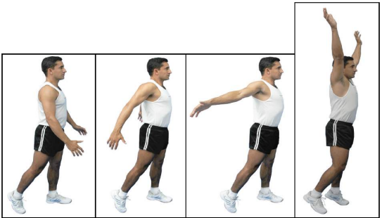
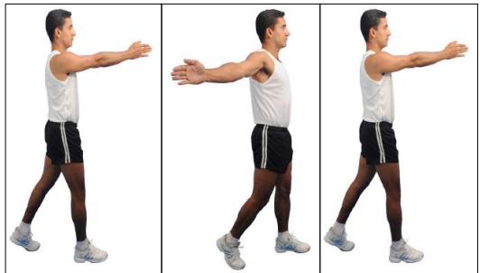
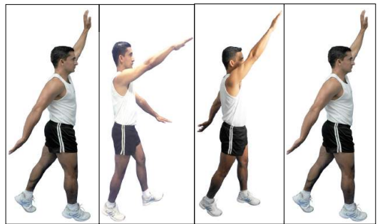
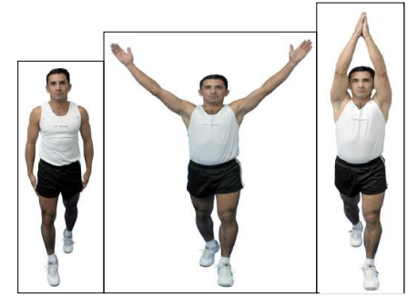

a) 15 a 20s de corrida elevando os joelhos, alternadamente, até a altura dos quadris

a) 15 a 20s de corrida elevando a perna estendida à frente e de maneira alternada. A cada três passos o movimento deve ser repetido.

a) 15 a 20s de corrida elevando os calcanhares, alternadamente, até a altura dos glúteos, buscando manter o tronco na vertical.

a) 15 a 20s de corrida com passada lateral, sem cruzar as pernas, mantendo a mesma direção de deslocamento. Ao terminar, inverter a frente mantendo a direção de deslocamento e prosseguindo por mais 15 a 20s

a) 15 a 20s de corrida com torção de tronco, com a perna sendo levemente elevada e lançada no sentido contrário ao do giro do tronco. O movimento será repetido a cada três passadas.
Obs: deverá haver o cuidado para não se realizar flexão junto com a torção, para evitar o cisalhamento das vértebras.

a) 15 a 20s de corrida, com circundução dos braços para frente, seguida de mais 15 a 20s de corrida, com circundução dos braços para trás. Os braços deverão passar o mais próximo possível das orelhas, de acordo com a amplitude articular individual

a) 15 a 20s de corrida ritmada (saltitando), com adução dos braços à frente, executando duas batidas de mãos, seguida da abdução dos braços para trás, hiperestendendo-os também por duas vezes.

a) 15 a 20s de corrida ritmada (saltitando), com extensão alternada dos braços na vertical, de maneira que, quando o braço esquerdo estiver para cima, a perna direita estará à frente e vice-versa.

a) 15 a 20s de corrida ritmada (saltitando), com a execução de batidas de mãos acima da cabeça, seguidas de batidas de mãos nas coxas
